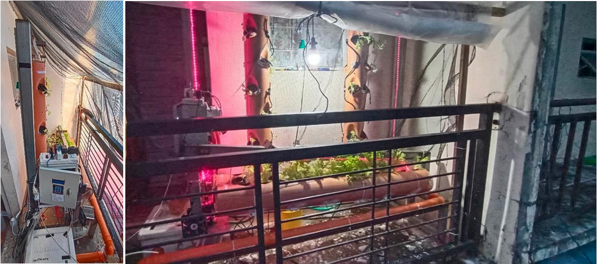
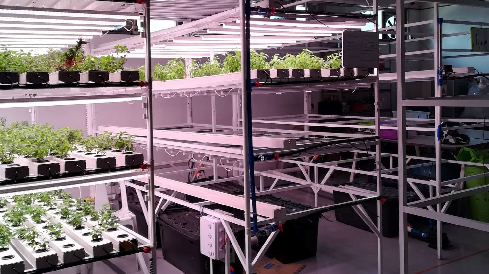
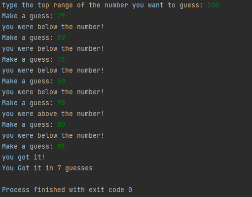
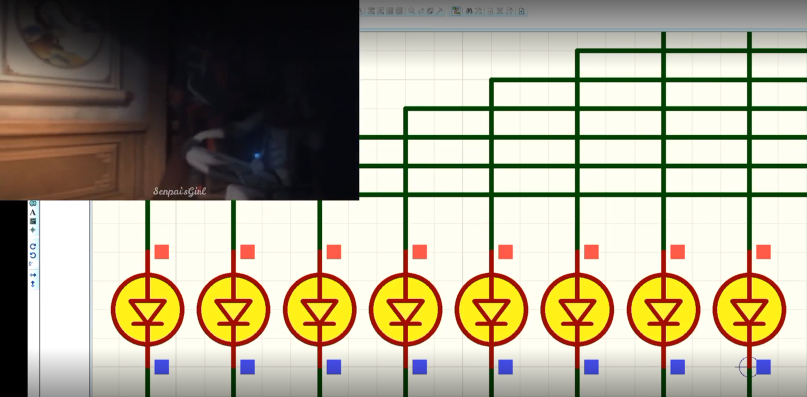
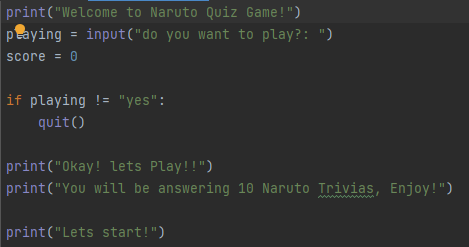

Major Project:

"INDOOR GARDENING AEROPONICS SYSTEM WITH MOBILE MONITORING"
| The topic of aeroponics gained popularity during the pandemic where lockdowns raise concern for shortages of food supply prompting some people to practice growing their own food in their own home, the topic eventually expanding into aeroponics addressing the food security problem. According to research one of the popular innovations that address food security problem is Aeroponics. With this, we have developed an aeroponics system for an indoor gardening within each household and at the same time make comparison of the growing methods of the aeroponics system which is either vertical or horizontal. The idea of the device can be grouped into six categories, mainly, misting system, cooling system, reservoir monitoring, lighting system, display system and mobile application.To assure the device reliability and performance, a testing for the device was conducted through an observation. Results showed that there was no difference between crowded and uncrowded method of planting for all lettuces grew. |

"SMART WATER VALVE SYSTEM FOR URBAN GREEN HYDROPONIC SYSTEM"
| “Removing Human Error” this is the main problem that we wanted to solve. Many of the maintenance crew on Urban green seldomly forget to open some of the water systems in the Gutters in their Hydroponic system when they are doing maintenance on it, and with that even if it’s just 1 water valve that is left closed, a whole layer of plants is in verge of dying in that process and that would be a hundred of plants that will not be sold for that reason only. With that, Urban Greens CEO Ralph Becker, assigned us his engineering Interns to think for a solution that would help Urban Greens in Reducing Human error. We have proposed a Smart Valve system with Blynk Application for monitoring and control, that is an Arduino based automation which we think that would solve the problem. The System is an Automated System incorporated with IoT. We used Arduino UNO as the brain for our operation on Automation that will be use in order for the system to work. The system is connected to Blynk application so that any of the of the users who has access on the application, or the system, can monitor or control what they want to do on the system. We used C language on programming the system, with this any of the user who have small knowledge on the C language programming can modify the system on how they want it to work. |
Minor Coding project

"Number Guesser"
| "Number Guesser" is one of the game that I thought about while practicing my coding skill in Python. It is a game where you will be giving what range of numbers do you want to guess, then the code will have a RNG or random number generator to give you a number, then you will have to guess it. The game will be telling you when you need to go higher or lower in your number of choice. In the game the player has unlimited life on how many time they want to guess, but the number of guess is counted, meaning the lower the count is, the higher the players score is. Although is not an original game that I made, it still give me some ideas about particular lessons and project that I can do in the future. |
"La Casa Del Mundo"
| "La Casa Del Mundo" is one of the game project we did during our first year in Computer Engineering while learning C language. It is a Situational Game horror where the Main Character has to choose some of the choices for each senario to meet the good ending. It has a total or 3 good ending and 3 bad ending for the players. Sadly i dont have any documentation on this project since its been 3 years since then. |

"Dancing light"
| "Dancing Light" is one of the porject we did during our Second Year in college with the use of assembly language. Its composed of several LED lights programmed to blink on and off as the music is progressing, that is why its called the "Dancing light". During our Second year we only did it in simulation so there is no physical LED that is dancing with the music but we have a video with its simulation. "Click Here!!!" |

"Naruto Quiz Game"
| "Naruto Quiz Game" is a game I thought about with the use of Q&A game during my progress of learning Python Language. The game is consist of Naruto Trivias about its history and about the characters. The game has its score counter and consist of only 10 questions. I was planning on making it bigger but i proceed on the next lesson for the python class i was taking. |
Home"Minsan Plat Gaming, minsan Bronze gaming... Well ganun talaga buhay. it iz what it iz... more |
About"Consist of people From Different from different Localities, from different mothers from... " more |
Contact"if you want to contact the Owner of this mother paking shit Call #09391217741 or email..." more |